Québec main effects
Loading details
library(data.table); library(ggplot2); library(knitr); library(lme4);
opts_chunk$set(warning=TRUE, cache=TRUE,tidy=FALSE,autodep=TRUE,dev=c('png','pdf'),fig.width=20,fig.height=12.5,out.width='1440px',out.height='900px',cache.extra=file.info('rpqa.rdata')[, 'mtime'])
source("0__helpers.R")
load("rpqa.rdata")Analysis description
Data subset
The rpqa.1 dataset contains only those participants where paternal age is known and the birthdate is between 1630 and 1750.
Model description
All of the following models have the following in common:
Optimizer settings
Bobyqa is fairly robust to convergence failures. In addition to using Bobyqa, we center some variables that otherwise lead to large eigenvalues.
control_defaults = glmerControl(optimizer = "bobyqa")Covariates
As in our main models, we control for birth.cohort (birth years in five equally large bins), male sex. Additionally, we control for paternal and maternal loss (whether either parent died within 5 years of the birth), for maternal age (bins of 14-20, 20-35 and 35-50), the number of siblings.
Model stratification
We added random intercepts for each family (father-mother dyad). We then controlled for the average paternal age in the family. Hence, the paternal age effects in the plot are split into those between families and those within families or between siblings. The relevant effect for our hypothesized mechanism, de novo mutations, is paternal age between siblings.
Episodes of selection
Here, episodes of selection refers to survival, mating success, reproductive success. To steer clear of sacrificial pseudo-replication, we make sure that each effect cannot be explained by the episode of selection preceding it. At its simplest, we check for effect on survival to reproduction only among those who lived to their first birthday. In later models, we look for an effect on number of children only among those who married and control their number of spouses.
Survival to first year
Survive_infancy <- glmer(
survive1y ~ birth.cohort + male + urban + paternalage.mean + paternalage.diff + (1|idParents),
data= rpqa.1,
family='binomial', control = control_defaults )
summary(Survive_infancy)## Generalized linear mixed model fit by maximum likelihood (Laplace
## Approximation) [glmerMod]
## Family: binomial ( logit )
## Formula: survive1y ~ birth.cohort + male + urban + paternalage.mean +
## paternalage.diff + (1 | idParents)
## Data: rpqa.1
## Control: control_defaults
##
## AIC BIC logLik deviance df.resid
## 93548 93643 -46764 93528 96032
##
## Scaled residuals:
## Min 1Q Median 3Q Max
## -4.308 0.271 0.384 0.497 1.847
##
## Random effects:
## Groups Name Variance Std.Dev.
## idParents (Intercept) 0.558 0.747
## Number of obs: 96042, groups: idParents, 17030
##
## Fixed effects:
## Estimate Std. Error z value Pr(>|z|)
## (Intercept) 2.3316 0.0294 79.3 < 2e-16 ***
## birth.cohort(1706,1723] -0.1966 0.0332 -5.9 0.0000000033 ***
## birth.cohort(1723,1734] -0.5495 0.0331 -16.6 < 2e-16 ***
## birth.cohort(1734,1743] -0.6330 0.0329 -19.2 < 2e-16 ***
## birth.cohort(1743,1750] -1.0414 0.0326 -31.9 < 2e-16 ***
## male -0.2912 0.0174 -16.7 < 2e-16 ***
## urban -0.8371 0.0238 -35.1 < 2e-16 ***
## paternalage.mean 0.0716 0.0168 4.3 0.0000193375 ***
## paternalage.diff -0.2357 0.0160 -14.7 < 2e-16 ***
## ---
## Signif. codes: 0 '***' 0.001 '**' 0.01 '*' 0.05 '.' 0.1 ' ' 1
##
## Correlation of Fixed Effects:
## (Intr) b.(170 b.(172 b.(173 b.(174 male urban ptrnlg.m
## b.(1706,172 -0.619
## b.(1723,173 -0.689 0.587
## b.(1734,174 -0.714 0.561 0.651
## b.(1743,175 -0.738 0.558 0.627 0.677
## male -0.329 -0.003 0.003 0.005 0.009
## urban -0.321 0.051 0.082 0.111 0.131 0.026
## paternlg.mn -0.124 0.029 0.080 0.094 0.104 0.000 -0.008
## patrnlg.dff 0.080 -0.032 -0.026 -0.077 -0.110 0.009 -0.008 -0.026Survive_infancy_coefs = fortify_mine(Survive_infancy)
plot_fortified_mer(Survive_infancy_coefs, "Surviving infancy / first year")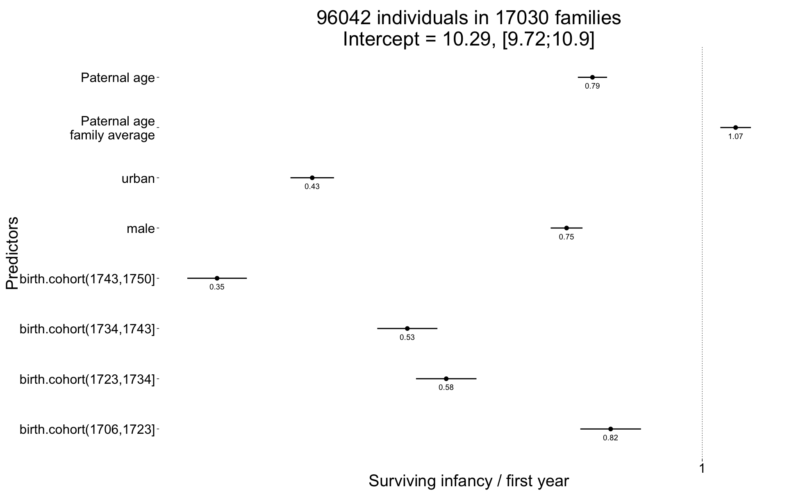
plot_residuals(Survive_infancy)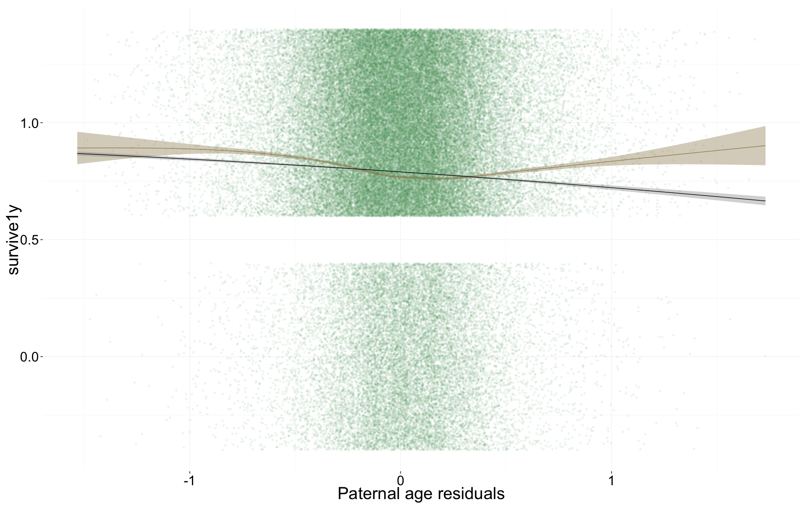
Survival to reproductive age
Survive_reproductive <- glmer(
surviveR ~ birth.cohort + male + urban + paternalage.mean + paternalage.diff + (1|idParents),
data= rpqa.1, subset = survive1y == TRUE,
family='binomial', control = control_defaults )
summary(Survive_reproductive)## Generalized linear mixed model fit by maximum likelihood (Laplace
## Approximation) [glmerMod]
## Family: binomial ( logit )
## Formula:
## surviveR ~ birth.cohort + male + urban + paternalage.mean + paternalage.diff +
## (1 | idParents)
## Data: rpqa.1
## Control: control_defaults
## Subset: survive1y == TRUE
##
## AIC BIC logLik deviance df.resid
## 59355 59447 -29667 59335 75773
##
## Scaled residuals:
## Min 1Q Median 3Q Max
## -4.171 0.272 0.329 0.396 1.061
##
## Random effects:
## Groups Name Variance Std.Dev.
## idParents (Intercept) 0.417 0.646
## Number of obs: 75783, groups: idParents, 16062
##
## Fixed effects:
## Estimate Std. Error z value Pr(>|z|)
## (Intercept) 2.5895 0.0345 75.0 < 2e-16 ***
## birth.cohort(1706,1723] -0.2422 0.0388 -6.2 4.4e-10 ***
## birth.cohort(1723,1734] -0.5859 0.0384 -15.3 < 2e-16 ***
## birth.cohort(1734,1743] -0.3669 0.0395 -9.3 < 2e-16 ***
## birth.cohort(1743,1750] -0.8413 0.0387 -21.7 < 2e-16 ***
## male -0.0968 0.0222 -4.4 1.3e-05 ***
## urban -0.8352 0.0283 -29.5 < 2e-16 ***
## paternalage.mean 0.0230 0.0195 1.2 0.24
## paternalage.diff -0.1184 0.0202 -5.8 5.0e-09 ***
## ---
## Signif. codes: 0 '***' 0.001 '**' 0.01 '*' 0.05 '.' 0.1 ' ' 1
##
## Correlation of Fixed Effects:
## (Intr) b.(170 b.(172 b.(173 b.(174 male urban ptrnlg.m
## b.(1706,172 -0.616
## b.(1723,173 -0.673 0.564
## b.(1734,174 -0.665 0.531 0.593
## b.(1743,175 -0.696 0.538 0.587 0.600
## male -0.331 -0.001 0.003 0.006 0.003
## urban -0.330 0.063 0.097 0.120 0.150 0.036
## paternlg.mn -0.146 0.029 0.089 0.103 0.116 0.006 -0.011
## patrnlg.dff 0.078 -0.031 -0.018 -0.055 -0.071 0.004 -0.012 -0.020Survive_reproductive_coefs = fortify_mine(Survive_reproductive)
plot_fortified_mer(Survive_reproductive_coefs, "Surviving to reproductive age / 15 years")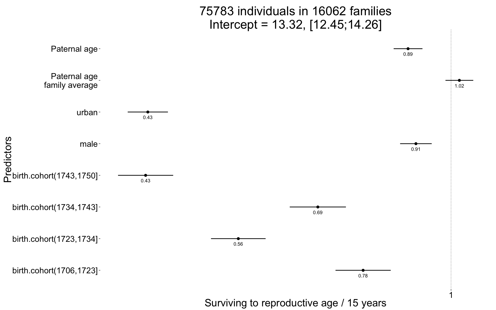
plot_residuals(Survive_reproductive)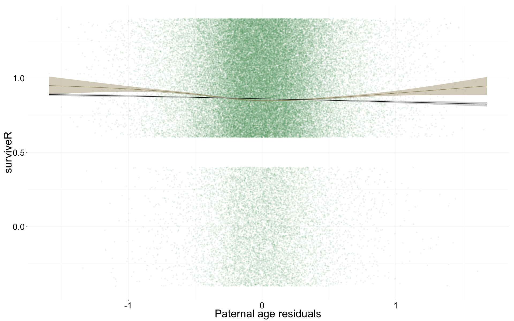
Ever married
Ever_married <- glmer(
ever_married ~ birth.cohort + male + urban + paternalage.mean + paternalage.diff + (1|idParents),
data= rpqa.1, subset = (surviveR == T | is.na(surviveR)),
family='binomial', control = control_defaults )
summary(Ever_married)## Generalized linear mixed model fit by maximum likelihood (Laplace
## Approximation) [glmerMod]
## Family: binomial ( logit )
## Formula: ever_married ~ birth.cohort + male + urban + paternalage.mean +
## paternalage.diff + (1 | idParents)
## Data: rpqa.1
## Control: control_defaults
## Subset: (surviveR == T | is.na(surviveR))
##
## AIC BIC logLik deviance df.resid
## 81940 82032 -40960 81920 75344
##
## Scaled residuals:
## Min 1Q Median 3Q Max
## -3.154 -0.758 0.452 0.561 1.495
##
## Random effects:
## Groups Name Variance Std.Dev.
## idParents (Intercept) 0.433 0.658
## Number of obs: 75354, groups: idParents, 16114
##
## Fixed effects:
## Estimate Std. Error z value Pr(>|z|)
## (Intercept) 1.60458 0.02604 61.6 < 2e-16 ***
## birth.cohort(1706,1723] 0.12428 0.02994 4.2 3.3e-05 ***
## birth.cohort(1723,1734] 0.00973 0.03090 0.3 0.75
## birth.cohort(1734,1743] 0.03973 0.03072 1.3 0.20
## birth.cohort(1743,1750] 0.14027 0.03266 4.3 1.8e-05 ***
## male -0.65673 0.01842 -35.7 < 2e-16 ***
## urban -0.64725 0.02495 -25.9 < 2e-16 ***
## paternalage.mean -0.03102 0.01650 -1.9 0.06 .
## paternalage.diff -0.11155 0.01635 -6.8 9.0e-12 ***
## ---
## Signif. codes: 0 '***' 0.001 '**' 0.01 '*' 0.05 '.' 0.1 ' ' 1
##
## Correlation of Fixed Effects:
## (Intr) b.(170 b.(172 b.(173 b.(174 male urban ptrnlg.m
## b.(1706,172 -0.571
## b.(1723,173 -0.607 0.509
## b.(1734,174 -0.626 0.483 0.548
## b.(1743,175 -0.595 0.449 0.488 0.531
## male -0.422 -0.004 -0.004 -0.002 -0.004
## urban -0.323 0.069 0.096 0.115 0.121 0.034
## paternlg.mn -0.163 0.030 0.087 0.102 0.107 0.004 -0.002
## patrnlg.dff 0.106 -0.040 -0.030 -0.073 -0.094 0.008 -0.014 -0.015Ever_married_coefs = fortify_mine(Ever_married)
plot_fortified_mer(Ever_married_coefs, "Odds of ever marrying")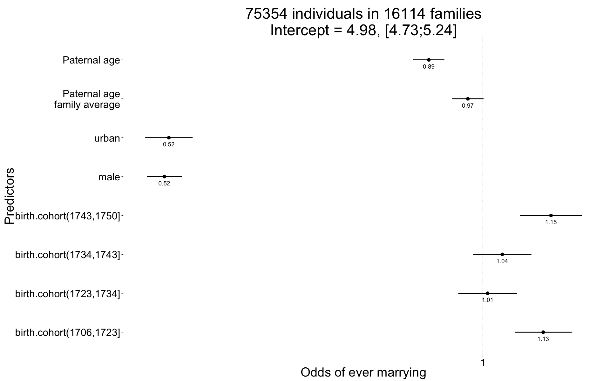
plot_residuals(Ever_married)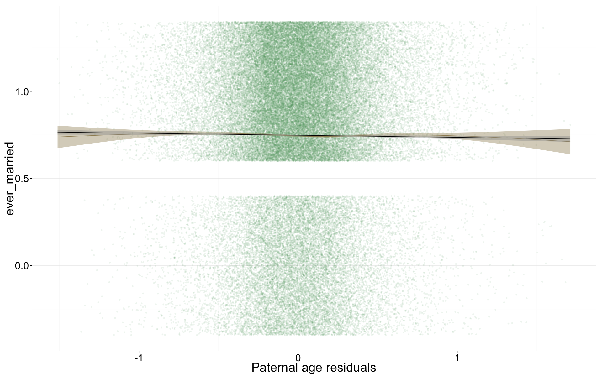
Number of children
Children <- glmer(
children ~ center(spouses)*male + birth.cohort + urban + paternalage.mean + paternalage.diff + (1|idParents) + (1|idIndividu),
data= rpqa.1, subset = spouses > 0,
family='poisson', control = control_defaults )
summary(Children)## Generalized linear mixed model fit by maximum likelihood (Laplace
## Approximation) [glmerMod]
## Family: poisson ( log )
## Formula:
## children ~ center(spouses) * male + birth.cohort + urban + paternalage.mean +
## paternalage.diff + (1 | idParents) + (1 | idIndividu)
## Data: rpqa.1
## Control: control_defaults
## Subset: spouses > 0
##
## AIC BIC logLik deviance df.resid
## 344292 344408 -172133 344266 56349
##
## Scaled residuals:
## Min 1Q Median 3Q Max
## -2.028 -0.407 0.134 0.387 0.995
##
## Random effects:
## Groups Name Variance Std.Dev.
## idIndividu (Intercept) 0.2566 0.507
## idParents (Intercept) 0.0309 0.176
## Number of obs: 56362, groups: idIndividu, 56362; idParents, 14996
##
## Fixed effects:
## Estimate Std. Error z value Pr(>|z|)
## (Intercept) 1.926859 0.008912 216.2 < 2e-16 ***
## center(spouses) 0.060828 0.008869 6.9 7.0e-12 ***
## male 0.000691 0.008641 0.1 0.9363
## birth.cohort(1706,1723] -0.065120 0.008890 -7.3 2.4e-13 ***
## birth.cohort(1723,1734] -0.067682 0.009291 -7.3 3.2e-13 ***
## birth.cohort(1734,1743] -0.047112 0.009183 -5.1 2.9e-07 ***
## birth.cohort(1743,1750] -0.029799 0.009600 -3.1 0.0019 **
## urban -0.115355 0.008280 -13.9 < 2e-16 ***
## paternalage.mean -0.011985 0.004907 -2.4 0.0146 *
## paternalage.diff -0.025972 0.004857 -5.3 8.9e-08 ***
## center(spouses):male 0.194264 0.011496 16.9 < 2e-16 ***
## ---
## Signif. codes: 0 '***' 0.001 '**' 0.01 '*' 0.05 '.' 0.1 ' ' 1
##
## Correlation of Fixed Effects:
## (Intr) cntr() male b.(170 b.(172 b.(173 b.(174 urban
## centr(spss) -0.551
## male -0.487 0.550
## b.(1706,172 -0.516 0.012 0.007
## b.(1723,173 -0.532 0.002 0.006 0.515
## b.(1734,174 -0.561 0.020 0.006 0.496 0.542
## b.(1743,175 -0.553 0.037 0.006 0.471 0.497 0.538
## urban -0.234 -0.006 0.015 0.069 0.090 0.110 0.120
## paternlg.mn -0.147 0.002 -0.001 0.038 0.093 0.114 0.122 -0.007
## patrnlg.dff 0.109 -0.001 0.001 -0.041 -0.033 -0.068 -0.086 -0.010
## cntr(spss): 0.422 -0.769 -0.773 -0.017 -0.008 -0.011 -0.019 0.006
## ptrnlg.m ptrnlg.d
## centr(spss)
## male
## b.(1706,172
## b.(1723,173
## b.(1734,174
## b.(1743,175
## urban
## paternlg.mn
## patrnlg.dff -0.015
## cntr(spss): 0.004 0.000Children_coefs = fortify_mine(Children)
plot_fortified_mer(Children_coefs, "Nr. Children (of those who had at least one spouse)")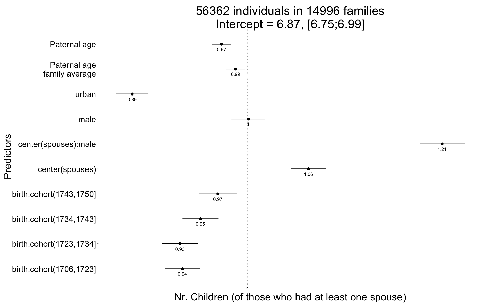
plot_residuals(Children)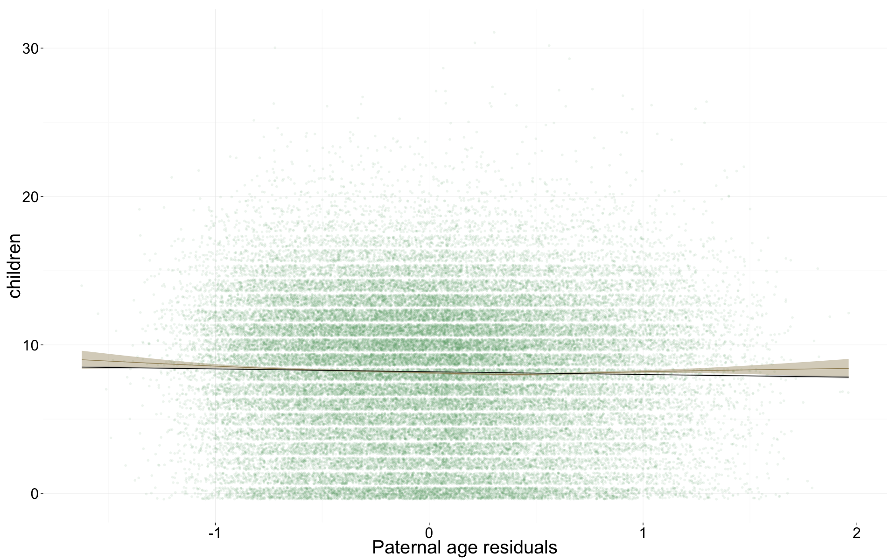
Number of children surviving first year
Children.surviving1y <- glmer(
children.surviving1y ~ center(children.wddate) + birth.cohort + male + urban + paternalage.mean + paternalage.diff + (1|idParents) + (1|idIndividu),
data= rpqa.1, subset = children > 0,
family='poisson', control = control_defaults )## Warning in checkConv(attr(opt, "derivs"), opt$par, ctrl = control$checkConv, : Model is nearly unidentifiable: very large eigenvalue
## - Rescale variables?summary(Children.surviving1y)## Generalized linear mixed model fit by maximum likelihood (Laplace
## Approximation) [glmerMod]
## Family: poisson ( log )
## Formula: children.surviving1y ~ center(children.wddate) + birth.cohort +
## male + urban + paternalage.mean + paternalage.diff + (1 |
## idParents) + (1 | idIndividu)
## Data: rpqa.1
## Control: control_defaults
## Subset: children > 0
##
## AIC BIC logLik deviance df.resid
## 227262 227368 -113619 227238 52912
##
## Scaled residuals:
## Min 1Q Median 3Q Max
## -5.546 -0.555 0.103 0.583 1.869
##
## Random effects:
## Groups Name Variance Std.Dev.
## idIndividu (Intercept) 0.00000 0.0000
## idParents (Intercept) 0.00129 0.0359
## Number of obs: 52924, groups: idIndividu, 52924; idParents, 14744
##
## Fixed effects:
## Estimate Std. Error z value Pr(>|z|)
## (Intercept) 1.435965 0.004771 301.0 <2e-16 ***
## center(children.wddate) 0.103408 0.000396 261.0 <2e-16 ***
## birth.cohort(1706,1723] -0.102432 0.005175 -19.8 <2e-16 ***
## birth.cohort(1723,1734] -0.114622 0.005337 -21.5 <2e-16 ***
## birth.cohort(1734,1743] -0.117613 0.005252 -22.4 <2e-16 ***
## birth.cohort(1743,1750] -0.090136 0.005499 -16.4 <2e-16 ***
## male -0.009687 0.003435 -2.8 0.0048 **
## urban -0.151911 0.005103 -29.8 <2e-16 ***
## paternalage.mean -0.001537 0.002772 -0.6 0.5791
## paternalage.diff -0.007639 0.003020 -2.5 0.0114 *
## ---
## Signif. codes: 0 '***' 0.001 '**' 0.01 '*' 0.05 '.' 0.1 ' ' 1
##
## Correlation of Fixed Effects:
## (Intr) cnt(.) b.(170 b.(172 b.(173 b.(174 male urban
## cntr(chld.) -0.501
## b.(1706,172 -0.517 0.017
## b.(1723,173 -0.515 0.001 0.451
## b.(1734,174 -0.531 -0.001 0.457 0.461
## b.(1743,175 -0.517 0.008 0.437 0.439 0.455
## male -0.278 -0.148 -0.017 -0.002 -0.004 -0.005
## urban -0.254 0.033 0.071 0.091 0.108 0.115 0.027
## paternlg.mn -0.177 0.017 0.044 0.104 0.125 0.134 0.003 -0.004
## patrnlg.dff 0.094 0.009 -0.030 -0.014 -0.034 -0.041 -0.004 -0.007
## ptrnlg.m
## cntr(chld.)
## b.(1706,172
## b.(1723,173
## b.(1734,174
## b.(1743,175
## male
## urban
## paternlg.mn
## patrnlg.dff -0.012Children.surviving1y_coefs = fortify_mine(Children.surviving1y)
plot_fortified_mer(Children.surviving1y_coefs, "Nr. Children who survive first year (of those who survived infancy")
plot_residuals(Children.surviving1y)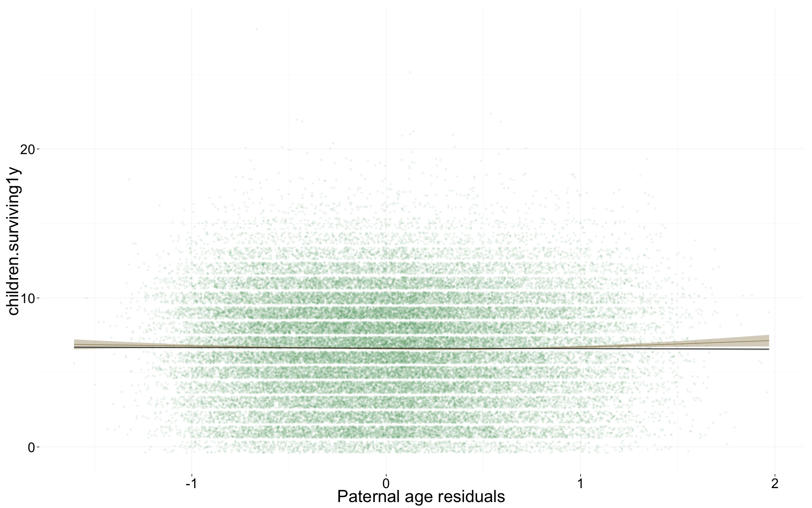
Number of grandchildren
Grandchildren.per.Child <- glmer(
grandchildren ~ center(children) + male + urban + paternalage.mean + paternalage.diff + (1|idParents) + (1|idIndividu),
data= rpqa.1, subset = children > 0 & byear <= 1700,
family = "poisson", control = control_defaults )
summary(Grandchildren.per.Child)## Generalized linear mixed model fit by maximum likelihood (Laplace
## Approximation) [glmerMod]
## Family: poisson ( log )
## Formula:
## grandchildren ~ center(children) + male + urban + paternalage.mean +
## paternalage.diff + (1 | idParents) + (1 | idIndividu)
## Data: rpqa.1
## Control: control_defaults
## Subset: children > 0 & byear <= 1700
##
## AIC BIC logLik deviance df.resid
## 82521 82578 -41252 82505 9107
##
## Scaled residuals:
## Min 1Q Median 3Q Max
## -2.1656 -0.1327 0.0378 0.1349 0.6187
##
## Random effects:
## Groups Name Variance Std.Dev.
## idIndividu (Intercept) 0.522 0.722
## idParents (Intercept) 0.105 0.324
## Number of obs: 9115, groups: idIndividu, 9115; idParents, 2950
##
## Fixed effects:
## Estimate Std. Error z value Pr(>|z|)
## (Intercept) 2.5140 0.0180 139.4 < 2e-16 ***
## center(children) 0.1725 0.0021 82.2 < 2e-16 ***
## male -0.0234 0.0170 -1.4 0.17
## urban -0.2474 0.0219 -11.3 < 2e-16 ***
## paternalage.mean -0.0249 0.0155 -1.6 0.11
## paternalage.diff -0.0837 0.0149 -5.6 0.000000019 ***
## ---
## Signif. codes: 0 '***' 0.001 '**' 0.01 '*' 0.05 '.' 0.1 ' ' 1
##
## Correlation of Fixed Effects:
## (Intr) cntr() male urban ptrnlg.m
## cntr(chldr) -0.526
## male -0.393 -0.084
## urban -0.342 0.010 0.010
## paternlg.mn -0.237 -0.013 0.001 0.036
## patrnlg.dff 0.121 0.005 -0.007 0.025 0.021Grandchildren.per.Child_coefs = fortify_mine(Grandchildren.per.Child)
plot_fortified_mer(Grandchildren.per.Child_coefs, "Nr. of grandchildren per child")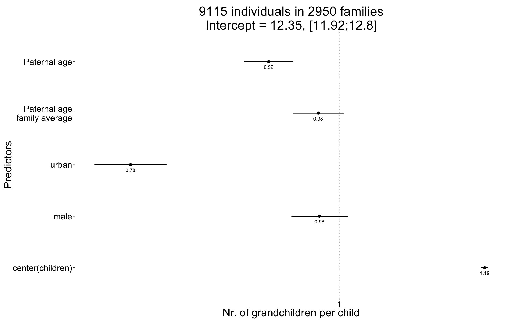
plot_residuals(Grandchildren.per.Child)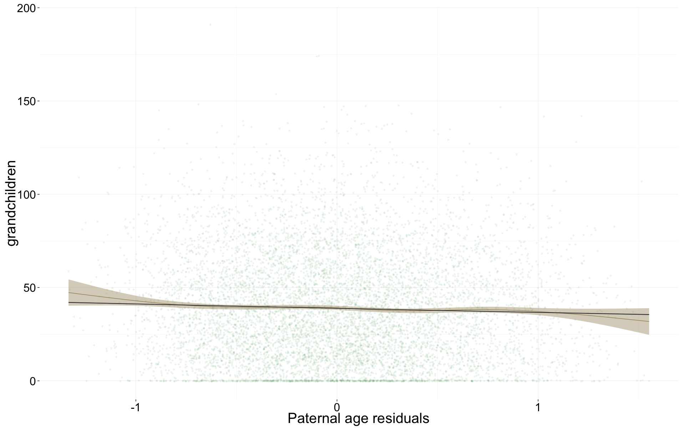
Any surviving children
Any_surviving_children <- glmer(
any_surviving_children ~ birth.cohort + male + urban + paternalage.mean + paternalage.diff + (1|idParents),
data= rpqa.1, subset = byear <= 1740,
family = 'binomial', control = control_defaults )
summary(Any_surviving_children)## Generalized linear mixed model fit by maximum likelihood (Laplace
## Approximation) [glmerMod]
## Family: binomial ( logit )
## Formula:
## any_surviving_children ~ birth.cohort + male + urban + paternalage.mean +
## paternalage.diff + (1 | idParents)
## Data: rpqa.1
## Control: control_defaults
## Subset: byear <= 1740
##
## AIC BIC logLik deviance df.resid
## 104221 104304 -52101 104203 78013
##
## Scaled residuals:
## Min 1Q Median 3Q Max
## -1.997 -0.917 -0.479 0.887 2.376
##
## Random effects:
## Groups Name Variance Std.Dev.
## idParents (Intercept) 0.283 0.532
## Number of obs: 78022, groups: idParents, 12951
##
## Fixed effects:
## Estimate Std. Error z value Pr(>|z|)
## (Intercept) 0.5084 0.0201 25.2 < 2e-16 ***
## birth.cohort(1706,1723] -0.1122 0.0229 -4.9 0.00000094 ***
## birth.cohort(1723,1734] -0.3787 0.0236 -16.1 < 2e-16 ***
## birth.cohort(1734,1743] -0.2787 0.0259 -10.8 < 2e-16 ***
## male -0.3342 0.0155 -21.6 < 2e-16 ***
## urban -0.8104 0.0212 -38.2 < 2e-16 ***
## paternalage.mean 0.0280 0.0140 2.0 0.046 *
## paternalage.diff -0.1442 0.0138 -10.4 < 2e-16 ***
## ---
## Signif. codes: 0 '***' 0.001 '**' 0.01 '*' 0.05 '.' 0.1 ' ' 1
##
## Correlation of Fixed Effects:
## (Intr) b.(170 b.(172 b.(173 male urban ptrnlg.m
## b.(1706,172 -0.598
## b.(1723,173 -0.646 0.541
## b.(1734,174 -0.606 0.469 0.540
## male -0.399 0.000 0.005 0.006
## urban -0.320 0.060 0.091 0.103 0.020
## paternlg.mn -0.169 0.033 0.094 0.095 0.000 -0.002
## patrnlg.dff 0.133 -0.050 -0.065 -0.106 0.005 -0.014 -0.021Any_surviving_children_coefs = fortify_mine(Any_surviving_children)
plot_fortified_mer(Any_surviving_children_coefs, "Any surviving children")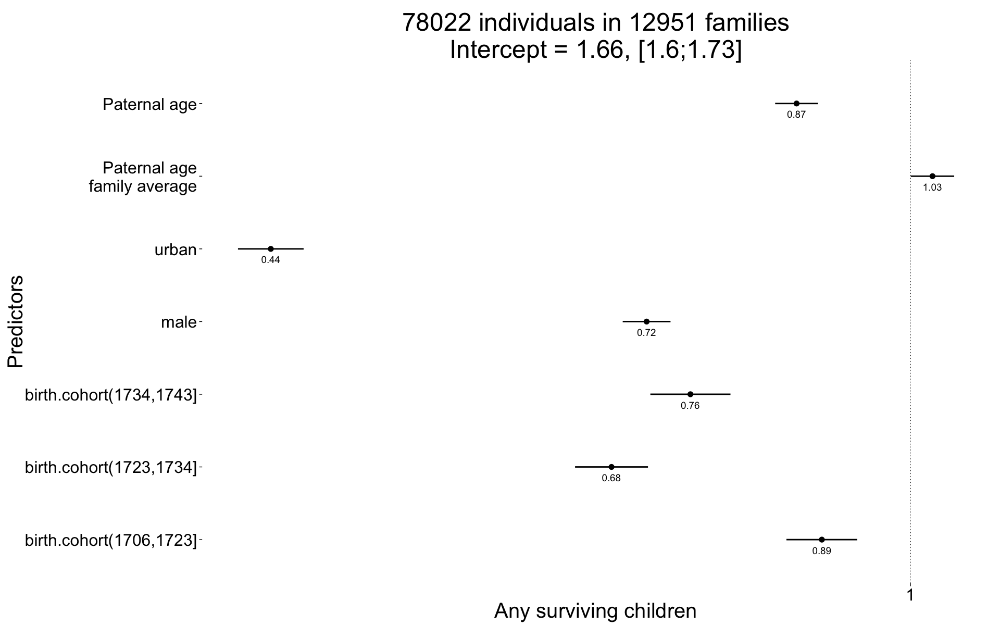
plot_residuals(Any_surviving_children)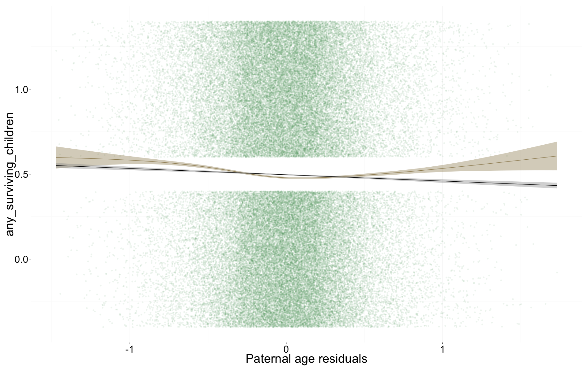
Wrap up
Save coefficients
name = "rpqa_main_effects"
save(list = lstype('confint.merMod'),file=paste0("coefs/",name,"_coefs.rdata"))
save(list = lstype(),file=paste0("coefs/",name,"_models.rdata"))Session Info
sessionInfo()## R version 3.1.3 (2015-03-09)
## Platform: x86_64-apple-darwin13.4.0 (64-bit)
## Running under: OS X 10.10.2 (Yosemite)
##
## locale:
## [1] en_US.UTF-8/en_US.UTF-8/en_US.UTF-8/C/en_US.UTF-8/en_US.UTF-8
##
## attached base packages:
## [1] grid graphics grDevices utils datasets stats methods
## [8] base
##
## other attached packages:
## [1] lme4_1.1-7 Rcpp_0.11.5 Matrix_1.2-0 zoo_1.7-12
## [5] QuantPsyc_1.5 MASS_7.3-40 boot_1.3-16 psych_1.5.1
## [9] foreign_0.8-63 mgcv_1.8-6 nlme_3.1-120 Hmisc_3.15-0
## [13] Formula_1.2-1 survival_2.38-1 lattice_0.20-31 reshape2_1.4.1
## [17] lubridate_1.3.3 car_2.0-25 stringi_0.4-1 dplyr_0.4.1
## [21] pander_0.5.2 knitr_1.9 rmarkdown_0.6.1 plyr_1.8.1
## [25] ggplot2_1.0.1 formr_0.1.17 data.table_1.9.5 stringr_0.6.2
## [29] devtools_1.7.0
##
## loaded via a namespace (and not attached):
## [1] acepack_1.3-3.3 assertthat_0.1 chron_2.3-45
## [4] cluster_2.0.1 codetools_0.2-11 colorspace_1.2-6
## [7] DBI_0.3.1 digest_0.6.8 evaluate_0.6
## [10] formatR_1.1 formula.tools_1.3.4 gtable_0.1.2
## [13] htmltools_0.2.6 labeling_0.3 latticeExtra_0.6-26
## [16] lazyeval_0.1.10 magrittr_1.5 memoise_0.2.1
## [19] minqa_1.2.4 mnormt_1.5-2 munsell_0.4.2
## [22] nloptr_1.0.4 nnet_7.3-9 operator.tools_1.3.0
## [25] parallel_3.1.3 pbkrtest_0.4-2 proto_0.3-10
## [28] quantreg_5.11 RColorBrewer_1.1-2 rpart_4.1-9
## [31] scales_0.2.4 SparseM_1.6 splines_3.1.3
## [34] tools_3.1.3date()## [1] "Thu May 28 14:14:24 2015"